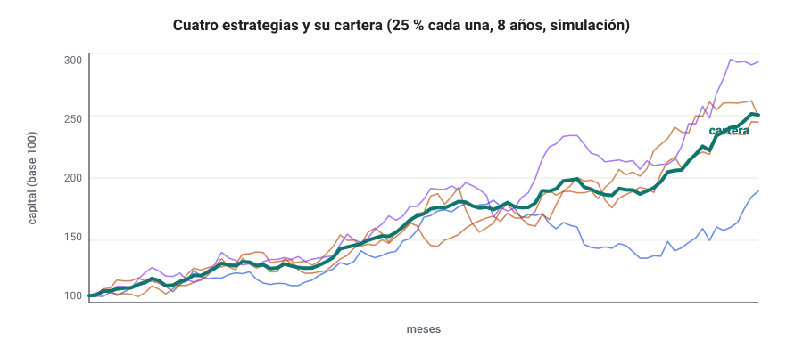
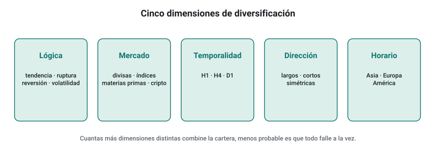
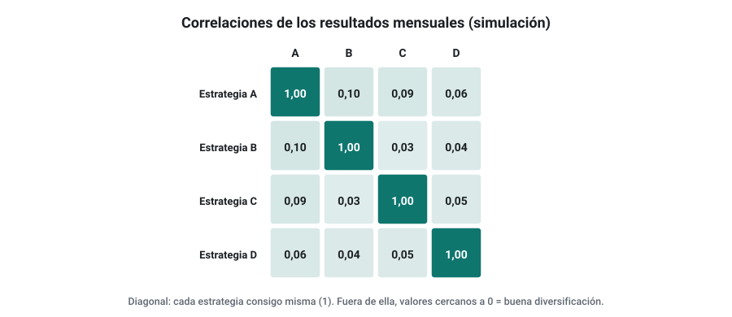
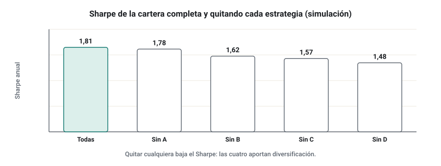

SEMANA 13 · ETAPA 4 · CARTERAS Y EJECUCIÓN
Construcción de carteras
Presentación de la semana
Empieza la etapa 4. Hasta ahora has evaluado estrategias de una en una. Pero ninguna estrategia funciona siempre: todas pasan por rachas malas. La forma más sólida de suavizar esas rachas no es buscar la estrategia perfecta, sino combinar varias estrategias que fallen en momentos distintos. Esta semana aprenderás por qué una cartera es mejor que una estrategia, cómo combinar lógicas, qué herramientas tienes en SQX y fuera de él, y cómo justificar el lugar de cada estrategia. Terminarás construyendo tu primera cartera.
Objetivos
Al terminar la semana sabrás:
- Explicar con números por qué una cartera reduce el riesgo.
- Distinguir entre combinar lógicas dentro de un algoritmo y combinar algoritmos.
- Usar las herramientas de cartera de SQX y QuantAnalyzer, o su equivalente en hoja de cálculo.
- Medir la aportación de cada estrategia a la cartera.
- Construir y documentar una cartera de tres a cinco estrategias.
Plan de la semana (22–25 horas)
| Bloque | Horas | Qué harás |
|---|---|---|
| Clases | 5 | Cinco lecciones: lectura y vídeos |
| Prácticas | 13 | Construcción y análisis de la primera cartera |
| Investigación y evaluación | 4 | Investigación I-13, entrega y examen |
| Revisión y planificación | 2 | Glosario, cuaderno y plan de la semana 14 |
Qué necesitas
- Las estrategias aceptadas en la etapa 3. Si tienes menos de tres, completa con las mejores «en duda» y anótalo; puedes añadir estrategias de otros mercados o temporalidades que hayas validado.
- SQX y, si tu edición lo incluye, Portfolio Master o QuantAnalyzer. Si no, la plantilla de hoja de cálculo de la lección 3.
Criterio para desbloquear la semana 14
Tener en estado APROBADO, con un 80 % o más cada uno:
- ☐ Examen de la semana 13
- ☐ Entrega práctica: primera cartera documentada
- ☐ Investigación I-13: los ocho pasos documentados
Por qué una cartera y no una estrategia
Formato: clase de 35 minutos · Lectura: 30 minutos
El único almuerzo gratis
Se suele decir que la diversificación es «el único almuerzo gratis» de las finanzas: combinar activos o estrategias que no se mueven igual reduce el riesgo sin reducir la rentabilidad media. La razón es matemática.
La varianza de dos estrategias
Si combinas dos estrategias con pesos w₁ y w₂, desviaciones σ₁ y σ₂ y correlación ρ, la desviación de la cartera es:
Con dos estrategias al 50 %, ambas con una desviación anual del 10 %:
| Correlación | Desviación de la cartera |
|---|---|
| +1 | 10,0 % |
| +0,5 | 8,7 % |
| 0 | 7,1 % |
| −0,5 | 5,0 % |
La rentabilidad media es la misma en los cuatro casos (la media de las dos), pero el riesgo baja con la correlación.
Muchas estrategias
Con N estrategias independientes, de igual riesgo y con el mismo peso, la desviación de la cartera se divide por √N. Con 4 estrategias, a la mitad. Por eso los profesionales operan carteras de muchas estrategias pequeñas, no una grande.

Por qué importa más en trading algorítmico
- Ninguna validación es perfecta: alguna estrategia de tu cartera dejará de funcionar. En una cartera, eso es un problema; en una estrategia única, es el final.
- Las rachas se compensan: mientras una estrategia de tendencia sufre en un mercado lateral, una de reversión gana.
- La psicología mejora: una curva más suave es más fácil de seguir sin abandonar.
Comprueba que lo has entendido
- Calcula la desviación de una cartera al 50 % de dos estrategias del 12 % con correlación 0,2.
- ¿Por qué la rentabilidad media no cambia pero el riesgo sí?
- ¿Qué pasa con la desviación de 9 estrategias independientes de igual riesgo?
Combinar lógicas dentro de un algoritmo frente a combinar algoritmos
Formato: clase de 30 minutos · Lectura: 25 minutos
Dos formas de diversificar
| Dentro de un algoritmo (híbrida) | Varios algoritmos (cartera) | |
|---|---|---|
| Cómo | Una estrategia con varias lógicas o filtros | Varias estrategias independientes |
| Ventaja | Una sola pieza que gestionar | Cada estrategia se valida y se apaga por separado |
| Riesgo | Más grados de libertad, más sobreajuste | Exposición duplicada si se parecen |
| Validación | Hay que validar el conjunto | Se valida cada una y después la cartera |
En la semana 8 viste que las híbridas sobreajustan con facilidad. Por eso, en este curso, la diversificación se hace sobre todo entre algoritmos, cada uno simple y validado por separado.
Dimensiones de diversificación
Para que las estrategias fallen en momentos distintos, diversifica en varias dimensiones:
- Lógica: tendencia, ruptura, reversión, volatilidad.
- Mercado: varios pares de divisas, índices, materias primas o cripto.
- Temporalidad: H1, H4, D1.
- Dirección: estrategias solo largas y solo cortas, o simétricas.
- Horario: sesiones distintas.

Comprueba que lo has entendido
- ¿Por qué el curso prefiere diversificar entre algoritmos?
- Nombra cuatro dimensiones de diversificación.
- ¿Qué problema tiene una cartera de cinco estrategias de la misma familia y mercado?
Portfolio Master y QuantAnalyzer
Formato: taller de 40 minutos · Práctica: 2 horas
Las herramientas
- Portfolio Master (en SQX): combina estrategias de un databank y muestra la curva conjunta, el drawdown y las correlaciones. Según la web oficial, en las ediciones Starter y Professional actuales está limitado a un número pequeño de estrategias; en la Ultimate, sin límite. El Portfolio Composer, que busca automáticamente combinaciones, se añadió en builds posteriores a la 140.
- QuantAnalyzer (programa independiente de StrategyQuant; la versión Pro está incluida en la Ultimate): analiza y combina resultados de estrategias, incluidos los informes de MetaTrader, con herramientas de cartera y de Monte Carlo.
- Hoja de cálculo: con los resultados diarios o mensuales de cada estrategia, puedes calcular todo lo esencial.
La plantilla en hoja de cálculo
- Exporta de cada estrategia sus operaciones o su curva y agrúpalas en resultados mensuales (en porcentaje del capital de referencia), una columna por estrategia.
- Añade una columna «Cartera» con la media ponderada:
=SUMAPRODUCTO(B2:E2;$B$1:$E$1)con los pesos en la fila 1. - Calcula para cada columna: rentabilidad anualizada, desviación, Sharpe, drawdown máximo y meses positivos.
- Calcula la matriz de correlaciones entre estrategias (
COEF.DE.CORRELde cada par). - Dibuja las curvas acumuladas.

Comprueba que lo has entendido
- ¿Qué herramienta de cartera tienes disponible en tu edición?
- ¿Por qué se agrupan los resultados por meses o días?
- ¿Qué fórmula usas para la columna de la cartera?
Por qué cada estrategia merece su lugar
Formato: clase de 35 minutos · Lectura: 30 minutos
La prueba de quitar
La pregunta no es si una estrategia es buena, sino si mejora la cartera. La forma más directa de saberlo es quitarla y ver qué pasa:
| Si al quitarla… | Conclusión |
|---|---|
| El drawdown sube y el Sharpe baja | Aporta diversificación: se queda |
| El Sharpe sube | Resta: revísala o sácala |
| Casi nada cambia | Probablemente duplica a otra: sobra |

Criterios de entrada en la cartera
Para entrar, cada estrategia debe:
- Haber superado el protocolo de validación (etapa 3).
- Tener una correlación baja con las demás (por ejemplo, menor que 0,5 en resultados mensuales).
- Mejorar al menos una métrica de la cartera (Sharpe, drawdown o ratio beneficio/drawdown) sin empeorar otra de forma importante.
- Aportar una dimensión de diversificación nueva o reforzar una débil.
Pesos
Para empezar, usa pesos iguales en riesgo: cada estrategia arriesga lo mismo por operación. Optimizar los pesos con los datos históricos es otra forma de sobreajuste: los pesos «óptimos» del pasado rara vez lo son en el futuro.
Comprueba que lo has entendido
- Al quitar una estrategia, el Sharpe de la cartera sube. ¿Qué haces?
- ¿Por qué no se optimizan los pesos?
- Escribe tus cuatro criterios de entrada en la cartera.
Taller: primera cartera
Formato: taller guiado de 60 minutos · Práctica: 8–10 horas
Paso 1 · Reúne las candidatas
Lista tus estrategias validadas con: mercado, temporalidad, familia, dirección, operaciones al año y métricas del Walk-Forward.
Paso 2 · Resultados mensuales
Exporta de cada una sus resultados con tamaño fijo sobre el mismo periodo y conviértelos en rentabilidades mensuales con un mismo capital de referencia.
Paso 3 · Correlaciones
Calcula la matriz de correlaciones y marca los pares con correlación mayor que 0,5.
Paso 4 · Construye la cartera
Elige entre 3 y 5 estrategias aplicando los criterios de la lección 4. Usa pesos iguales.
Paso 5 · Prueba de quitar
Haz la prueba de quitar con cada estrategia y documenta el resultado.
Paso 6 · Monte Carlo de la cartera
Haz un reordenado de los resultados mensuales de la cartera (lección 2 de la semana 11) y calcula el drawdown del percentil 95.
Comprueba que lo has entendido
- ¿Cuánto bajó el drawdown de la cartera frente a la media de sus estrategias?
- ¿Qué estrategia aporta más? ¿Y cuál menos?
- ¿Qué dimensión de diversificación le falta a tu cartera?
Glosario de la semana
| Término | Inglés | Definición |
|---|---|---|
| Aportación marginal | Marginal contribution | Cambio en la cartera al añadir o quitar una estrategia |
| Cartera | Portfolio | Conjunto de estrategias operadas a la vez |
| Diversificación | Diversification | Reducción del riesgo combinando elementos que no se mueven igual |
| Matriz de correlaciones | Correlation matrix | Tabla con la correlación de cada par de estrategias |
| Peso | Weight | Parte del riesgo o del capital asignada a cada estrategia |
| Pesos iguales en riesgo | Equal risk weights | Cada estrategia arriesga lo mismo por operación |
| Portfolio Master | Portfolio Master | Herramienta de SQX para combinar estrategias |
| QuantAnalyzer | QuantAnalyzer | Programa de StrategyQuant para analizar resultados y carteras |
Ejercicios obligatorios
E1 · Dos estrategias. Calcula la desviación de una cartera al 50 % de dos estrategias con desviaciones del 8 % y del 14 % para correlaciones de 0,8, 0,2 y −0,3.
E2 · Raíz de N. ¿Cuántas estrategias independientes de igual riesgo necesitas para reducir la desviación a un tercio?
E3 · Correlación no constante. Busca en tus datos dos estrategias y calcula su correlación en cada año. ¿Es estable?
E4 · Dimensiones. Clasifica tus estrategias validadas por las cinco dimensiones de la lección 2 y señala qué dimensiones faltan.
E5 · Plantilla. Construye la plantilla de cartera en hoja de cálculo de la lección 3 con tus estrategias.
E6 · Prueba de quitar. Aplícala a tu cartera y presenta la tabla.
E7 · Pesos. Compara tu cartera con pesos iguales y con los pesos que habrían maximizado el Sharpe en la primera mitad de los datos, evaluadas en la segunda mitad. ¿Qué observas?
E8 · Duplicados. Dos de tus estrategias tienen una correlación de 0,75. Explica qué harías y por qué.
E9 · Monte Carlo. Calcula el drawdown del percentil 95 de tu cartera con 200 reordenados mensuales.
E10 · Informe. Redacta en 200 palabras el resumen ejecutivo de tu cartera: composición, métricas, riesgos y qué la haría fallar.
Investigación I-13 y entrega práctica
Investigación I-13 · ¿Cuánto reduce el drawdown la diversificación por lógica frente a la diversificación por mercado?
Paso 1 · Hipótesis. Ejemplo: «Una cartera de tres estrategias de lógicas distintas en EUR/USD reduce más el drawdown que una de tres estrategias de la misma lógica en tres pares distintos».
Paso 2 · Fuentes. Cita al menos una fuente sobre diversificación de estrategias.
Paso 3 · Datos. Tus estrategias validadas y, si hace falta, otras de tus databanks probadas con el mismo protocolo mínimo (hoja de evaluación y OOS).
Paso 4 · Diseño. Define las dos carteras, el periodo, los pesos (iguales) y la métrica principal.
Pasos 5 y 6 · Generación y validación. Construye las dos carteras y su Monte Carlo.
Paso 7 · Comparación. Drawdown, Sharpe y correlaciones medias de cada cartera.
Paso 8 · Conclusiones. ¿Qué tipo de diversificación aporta más con tus datos? ¿Qué limitaciones tiene la comparación?
Entrega práctica · Primera cartera
Qué entregar
| Archivo | Contenido |
|---|---|
CODIGO_S13_ENT |
Documento de la cartera: composición, criterios de entrada aplicados, matriz de correlaciones, curvas, métricas, prueba de quitar, Monte Carlo y resumen ejecutivo |
CODIGO_S13_HOJA |
Plantilla de cartera con fórmulas |
CODIGO_S13_INV |
Investigación I-13 |
| Ejercicios | E1 a E10 |
Cómo se evaluará
Se valora que cada estrategia tenga una razón documentada para estar en la cartera, que los resultados se combinen en el tiempo (mensuales o diarios) y que el análisis sea crítico. Una cartera sin matriz de correlaciones ni prueba de quitar queda como NO EVALUABLE.
Examen de la semana 13 · Variante A
Tiempo orientativo: 60 minutos · Puntuación: 100 puntos · Aprobado: 80 puntos · Puedes usar calculadora, pero no el material del curso ni el tutor de IA. Si suspendes, repetirás con otra variante.
Parte A · Opción múltiple (30 puntos, 2 por pregunta)
Parte B · Cálculo (45 puntos, 15 por ejercicio)
B1. Dos estrategias con desviaciones anuales del 9 % y del 15 % y correlación 0,1 se combinan al 60 % y 40 %. Calcula la desviación de la cartera. Si sus rentabilidades anuales son del 7 % y del 12 %, calcula la rentabilidad de la cartera y su cociente rentabilidad/desviación, y compáralo con el de cada estrategia.
B2. Una cartera de 4 estrategias tiene un Sharpe de 1,6. Quitando cada una: sin A, 1,35; sin B, 1,52; sin C, 1,71; sin D, 1,58. a) Ordena las estrategias por su aportación. b) ¿Cuál revisarías o sacarías? c) ¿Cuál es la más valiosa?
B3. Tienes 6 estrategias independientes de igual riesgo con una desviación anual del 18 % cada una. a) ¿Qué desviación tiene la cartera con pesos iguales? b) ¿Cuántas estrategias necesitarías para bajar al 6 %? c) ¿Por qué en la realidad la reducción será menor?
Parte C · Razonamiento (25 puntos)
En un máximo de 250 palabras: un compañero quiere construir su cartera con las cinco estrategias de mayor beneficio de su databank, todas de EUR/USD H1, con pesos optimizados para maximizar el Sharpe histórico. Explica qué problemas tiene su plan y cómo lo harías tú.